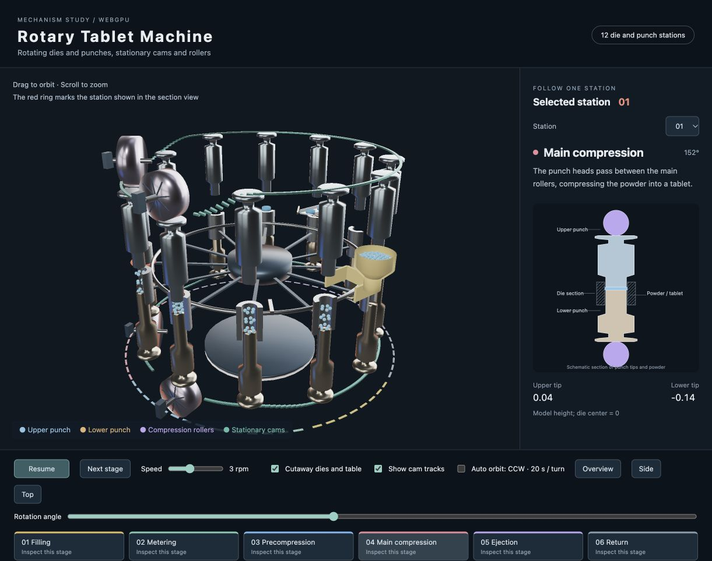

tablet_machine — Rotary Tablet Machine
English | 日本語

Overview
Observe filling, metering, precompression, main compression, ejection and return in a rotary tablet press. Twelve die and punch stations rotate past stationary cams, compression rollers, a powder feeder and a discharge chute. The English interface pairs the 3D mechanism with a section view of the selected station.
Running and controls
Open tablet_machine.html through an HTTP server in a WebGPU-capable browser. From the repository root, run python3 -m http.server 8898 and open http://localhost:8898/samples/tablet_machine/tablet_machine.html.
- Drag to orbit; scroll to zoom
- Pause / Resume controls the mechanism; Speed sets 0–8 rpm, initially 3 rpm
- Next stage and the stage buttons move the selected station to a representative position and pause
- Station selects the die and punches shown in the section view; a red ring marks them in 3D
- Rotation angle sets the turntable angle and pauses
- Cutaway dies and table opens the dies and hides the table and central shaft for a clear view of the powder and punch tips
- Show cam tracks displays the stationary guide paths
- Auto orbit circles counterclockwise once every 20 seconds at a fixed elevation, including while the mechanism is paused
- Overview / Side / Top select a fixed view and stop automatic orbiting
Mechanism
The dies are hollow cylinders. Narrow punch tips enter each die, while thick barrels provide the recognizable punch shape. Stationary cams guide the punch heads vertically. The smaller roller pair precompresses the charge; the main rollers compress it into a tablet. Roller axes point radially across the circular path, and punch-head heights follow the roller profiles at contact.
The turntable has twelve die openings, with its top level with the die tops. The open hopper contains pale blue powder. Formed tablets use a deeper blue. At ejection, the lower punch lifts the tablet to the die top, and a fixed take-off blade directs it onto a chute sloping outward by 10 degrees.
This is a schematic model for studying motion. Dimensions use model coordinates, and stage angle determines punch height and tablet state. Powder flow, density and compression forces can be modeled separately. Rails visualize the cam paths; bearings, drive components and cam grooves are simplified.
Rendering and code
PBR with a studio environment gives the dies, punches and rollers visible metallic reflections. Metallic is 0.96; roughness is 0.18 for punches, 0.22 for rollers and 0.24 for dies. Powder and tablets use diffuse materials with a small emissive contribution to keep them visible inside the dies.
mechanism.js: stage angles, punch profiles, roller contact paths and tablet movement along the chutemain.js: geometry, sharedShape.createInstance()meshes, Node animation, PBR rendering, controls and section-view updatestablet_machine.html/style.css: interface and layout
The 3D mechanism and section view share the results of sampleCycle().
Reference
The rotary tooling, cam-guided punches and filling/compression/ejection sequence follow the mechanism described in Fette Compacting patent US20190039270A1.